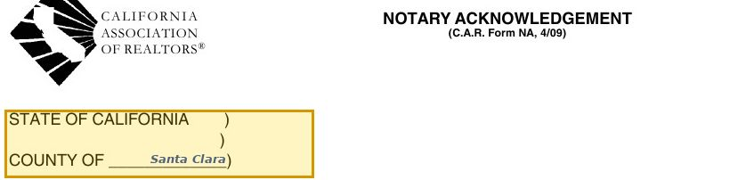
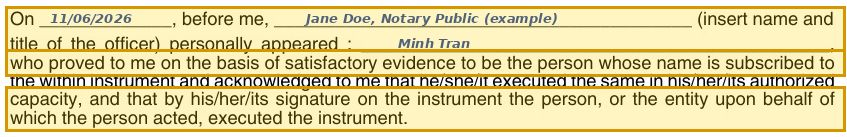
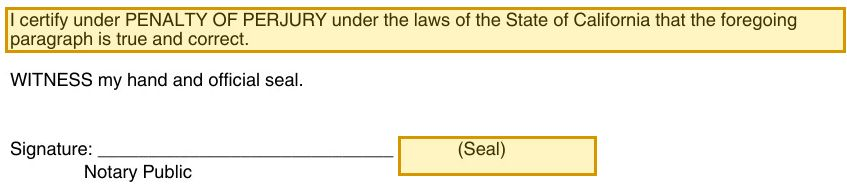
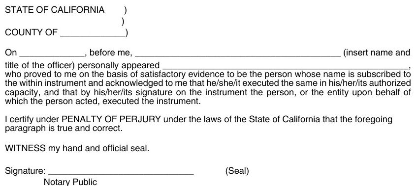

NA: the notary acknowledgment, the stamp page that lets a deed get recorded
C.A.R. Form NA (4/09) is the certificate a notary fills out to say: this person showed me ID and told me they signed this document. One page, two identical blocks. Here is what each line means, and what a notary does not check.
The 10-year-old version
Imagine your teacher signs your permission slip and writes: “I saw this kid’s school ID, and this kid told me the signature is really theirs.” The teacher is not saying the field trip is safe, or that the slip is filled in right. Only: right person, they signed it. A notary does exactly that for adults. The county will not record a deed without that note attached.
Example: Chị Lan (seller) signs a grant deed for 1234 Example Lane, San Jose, CA 95100. She shows her California driver license to the notary at escrow, signs the notary’s journal, and leaves a thumbprint. The notary fills in the acknowledgment, signs and stamps. Now escrow can record the deed.
Who signs it, when to use it, when not to
Who fills and signs
Only the notary public (or another officer allowed to take acknowledgments). The person who signed the document signs the document itself and the notary’s journal, not this certificate.
Use it when
A document must be recorded or the other side requires a notarized signature: grant deed, quitclaim deed, interspousal transfer deed, deed of trust, power of attorney, certification of trust, many loan and title papers.
Do NOT use it
For the purchase contract, counter offers and disclosures (no notary needed). For a sworn statement, where you swear the content is true: that needs a jurat, a different certificate. When signing in another state or country: the local notary uses their own form (valid in California, Civil Code §1189(b)).
Heads-up
This C.A.R. form is dated 4/09. Since 1/1/2015 every California acknowledgment must start with a boxed notice that the notary verifies only identity (Civil Code §1189(a)). A California notary will almost always attach their own current certificate. Use this page to understand the parts.
Walk through the form, line by line
Four images cut from the real form. The example signer and notary are filled in blue.
Top · venue
“State of California, County of ___”: where the signing happened

From the actual C.A.R. form. Blue text = example fill-in. Yellow = the part to read. Swipe sideways on a phone.
This is the venue: the county where the signer stood in front of the notary that day. Not where the property is. Not where the signer lives.
Example: the house being sold is in Fremont (Alameda County), but Chị Lan signs at an escrow office in San Jose. The venue says Santa Clara.
Heads-up: the current statutory form puts a boxed notice above this line (Civil Code §1189(a)(1)). This 4/09 form does not have it, so notaries use their own updated certificate.
Middle · the acknowledgment
Date, notary name, who appeared, and “satisfactory evidence”

From the actual C.A.R. form. Blue text = example fill-in. Yellow = the part to read. Swipe sideways on a phone.
On [date], before me [notary name and title], personally appeared [signer’s name]. “Personally appeared” means in person, in the room. “Satisfactory evidence” means acceptable ID: a current California license or ID, a U.S. passport, or certain other IDs, current or issued within the last 5 years, or credible witnesses (Civil Code §1185). The signer then admits they signed, in their authorized capacity (for example as trustee). The notary does not decide whether that capacity is real.
Example: On 11/06/2026, before me, Jane Doe, Notary Public (example), personally appeared Minh Tran. He showed a U.S. passport issued in 2023.
Bottom · perjury, signature, seal
The notary swears to it, signs and stamps

From the actual C.A.R. form. Blue text = example fill-in. Yellow = the part to read. Swipe sideways on a phone.
The notary certifies under penalty of perjury that the paragraph is true, signs, and applies the official seal. A notary who knowingly states something false faces a civil penalty up to $10,000 (Civil Code §1189(a)(4)). Behind the scenes the notary also writes a journal entry. For deeds, deeds of trust, other documents affecting real property and powers of attorney, the signer leaves a right thumbprint in that journal (Gov Code §8206).
Example: Minh Tran signs Jane Doe’s journal, leaves a thumbprint because it is a deed of trust, and pays $15 for his one signature.
Second block
The second block: another signer, another day or another county

From the actual C.A.R. form. Blue text = example fill-in. Yellow = the part to read. Swipe sideways on a phone.
The page repeats the same wording for a second acknowledgment. Use it when a second signer appears on a different date or in a different county. Two people who appear together at the same place and time can be listed on one block.
Example: Anh Minh signs in San Jose on Friday. Chị Lan signs at another notary in Fremont on Monday. Two blocks: Santa Clara for him, Alameda for her.
x
x
▾
▾
▾
▾
x
—
x
What people get wrong
“The notary checked that the deed is legal.” No. The required notice says the notary verifies only the identity of the signer, not the truthfulness, accuracy or validity of the document (Civil Code §1189).
“I can send my husband with my ID.” No. “Personally appeared” means you, in person. No exceptions for family.
“An old expired license is still a photo.” It must be current or issued within the last 5 years (Civil Code §1185).
“Notarized means recorded.” No. Recording is a separate step at the County Recorder, usually done by title or escrow.
“Any notary form from the internet is fine.” A California acknowledgment must use the statutory wording with the boxed notice. Out-of-state forms are fine only when signed out of state.